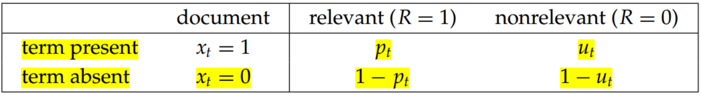
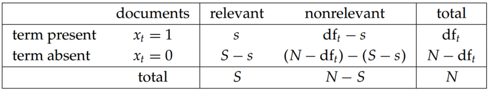

Introduction to Information Retrieval (Chapter 11 Probabilistic information retrieval)
1. The binary independence model
“Binary” is equivalent to Boolean: Documents and queries are both represented as binary term incidence vectors. That is, a document d is represented by the vector x=(x1,...,xM) where xt=1 if term t is present in document d and xt=0 if t is not present in d. Similarly, we represent q by the incidence vector q.
“Independence” means that terms are modeled as occurring in documents independently.
Here, P(R=1∣x,q) and P(R=0∣x,q) are the probability that if a relevant or nonrelevant, respectively, document is retrieved, then that document's representation is x. P(R=1∣q) and P(R=0∣q) indicate the prior probability of retrieving a relevant or nonrelevant document, respectively, for a query q.
Odds, a kind of multiplier for how probabilities change, is monotonic with the probability of relevance:
Henceforth, let pt=P(xt=1∣R=1,q) be the probability of a term appearing in a document relevant to the query, and ut=P(xt=1∣R=0,q) be the probability of a term appearing in a nonrelevant document. These quantities can be visualized in the following contingency table where the columns add to 1:

table 1.
Considering if terms are not occurring in the query, there is insignificant to calculate pt and ut. Thereby, we only consider terms in the products that appear in the query (qt=1), so
where, the resulting quantity used for ranking is retrieval called the retrieval status value (RSV), the ct terms are log odds ratios for the terms in the query.
Consequently,
RSVd=t:xt=qt=1∑ct(11)
Based on table 1, count the number of documents,

table 2.
In table 2, dft is the number of documents that contain term t, and pt=s/S/,,ut=(dft−s)/(N−S), so,
To avoid the possibility of zeroes (such as if every or no relevant document has a particular term) it is fairly standard to add 1/2 to each of the quantities in the center four terms of (12), and then to adjust the marginal counts (the totals) accordingly (so, the bottom right cell totals N+2). Then we have:
Getting reasonable approximations of the needed probabilities for a probabilistic IR model is possible, but it requires some major assumptions. In the BIM these are:
a Boolean representation of documents/queries/relevance
term independence
terms not in the query don’t affect the outcome
document relevance values are independent
2.1 Okapi BM25: A nonbinary model
The BIM was originally designed for short catalog records and abstracts of fairly consistent length, and it works reasonably in these contexts, but for modern full-text search collections, it seems clear that a model should pay attention to term frequency and document length.
The BM25 weighting scheme, often called Okapi weighting, after the system in which it was first implemented, was developed as a way of building a probabilistic model sensitive to these quantities while not introducing too many additional parameters into the model (Sparck Jones et al. 2000).
The simplest score for document d is just idf weighting of the query terms present,
RSVd=t∈q∑logdftN(14)
We can improve on Equation (14) by factoring in the frequency of each term and document length:
Here, tftd is the frequency of term t in document d, and Ld and Lave are the length of document d and the average document length for the whole collection. The variable k1 is a positive tuning parameter that calibrates the document term frequency scaling. A k1 value of 0 corresponds to a binary model (no term frequency), and a large value corresponds to using raw term frequency. b is another tuning parameter (0 ≤ b ≤ 1) that determines the scaling by document length: b=1 corresponds to fully scaling the term weight by the document length, whereas b=0 corresponds to no length normalization.
If the query is long, then we might also use similar weighting for query terms. This is appropriate if the queries are paragraph-long information needs, but unnecessary for short queries.
with tftq being the frequency of term t in the query q, and k3 being another positive tuning parameter that this time calibrates term frequency scaling of the query. In the absence of such optimization, experiments have shown reasonable values are to set k1 and k3 to a value between 1.2 and 2 and b=0.75.
The BM25 term weighting formulas have been used quite widely and quite successfully across a range of collections and search tasks. Especially in the TREC evaluations, they performed well and were widely adopted by many groups.
2.2 Bayesian network approaches to information retrieval
Probabilistic network is the primary case of a statistical ranked retrieval model that naturally supports structured query operators. The system allowed efficient large-scale retrieval, and was the basis of the InQuery text retrieval system, built at the University of Massachusetts. This system performed very well in TREC evaluations and for a time was sold commercially.
Conclusions
The difference between “vector space” and “probabilistic” IR systems is not that great. For a probabilistic IR system, it’s just that, at the end, you score queries not by cosine similarity and tf–idf in a vector space, but by a slightly different formula motivated by probability theory. Indeed, sometimes people have changed an existing vector-space IR system into an effectively probabilistic system simply by adopted term weighting formulas from probabilistic models.
The probabilistic approach to IR originated in the United Kingdom in the 1950s. The first major presentation of a probabilistic model is Maron and Kuhns (1960). Robertson and Jones (1976) introduce the main foundations of the BIM and van Rijsbergen (1979) presents in detail the classic BIM probabilistic model.